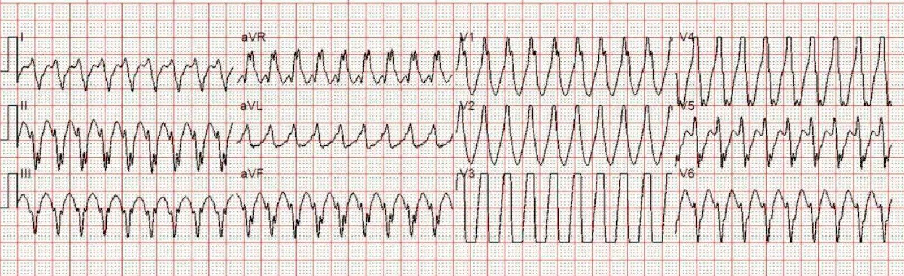
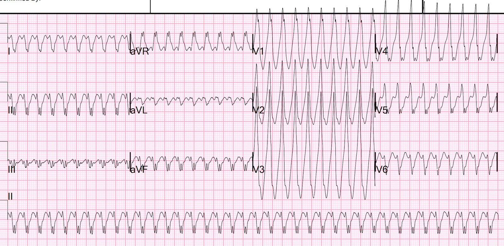
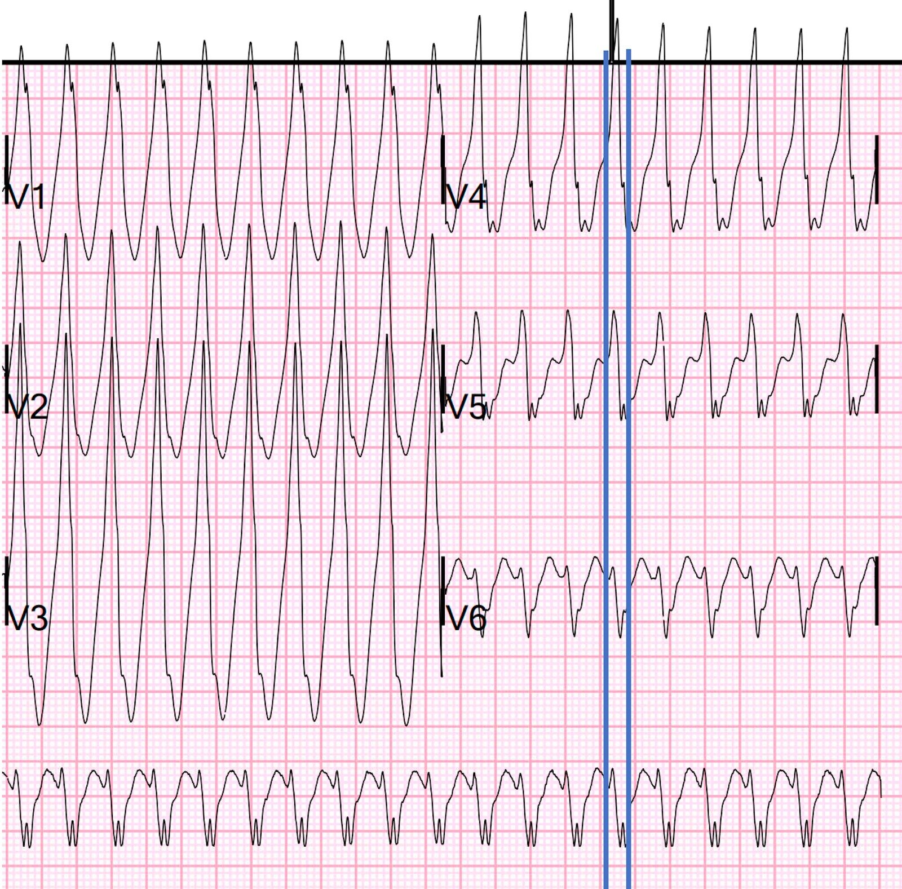
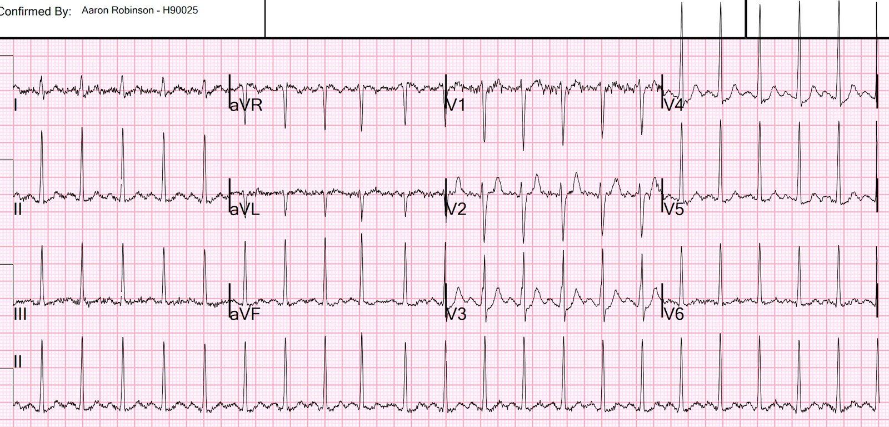
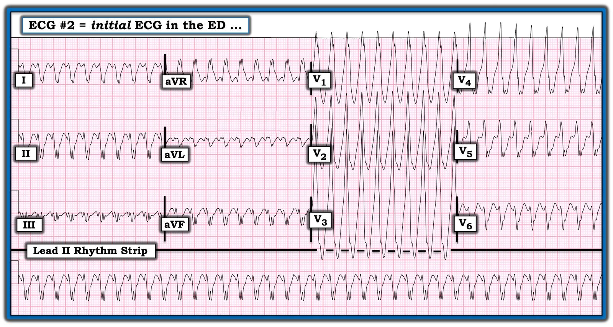
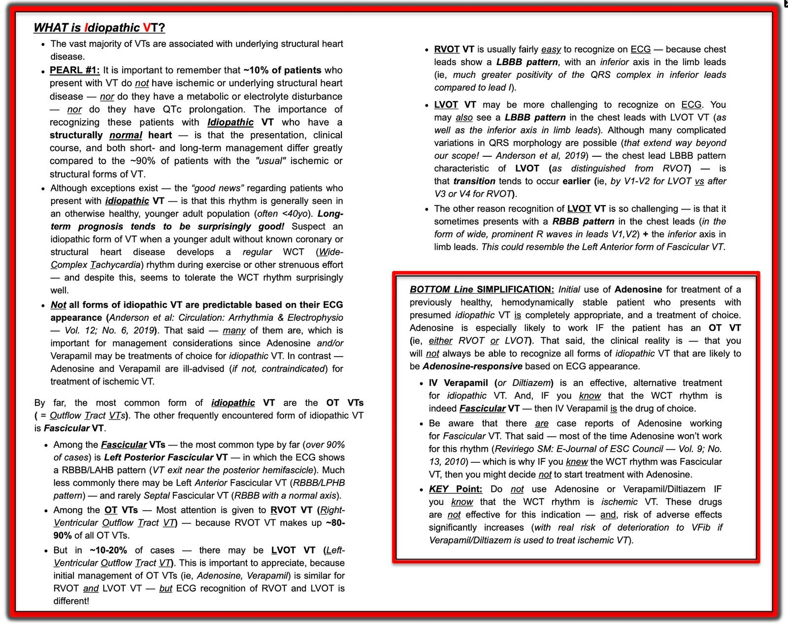

28/06/2023 — Nam thanh niên với nhịp nhanh QRS rộng đều rất nhanh
Bản dịch tiếng Việt của bài "Young Man with Very Fast Regular Wide Complex Tachycardia" – Dr. Smith’s ECG Blog. Giữ nguyên toàn bộ 7 hình ảnh của bản gốc.
Đội cấp cứu ngoài viện (EMS) được điều đến cho một nam giới khoảng 30 tuổi cảm thấy tim mình đập rất nhanh. Khởi phát đột ngột.
Bệnh nhân không có tiền sử bệnh lý gì trước đó.
Các dấu hiệu sinh tồn bình thường, ngoại trừ tần số tim 226.
Một điện tâm đồ 12 chuyển đạo trước viện đã được ghi:


Có nhịp nhanh QRS rộng đều. Máy tính chẩn đoán đây là nhịp nhanh thất (Ventricular Tachycardia).
Có chắc chắn là VT không??
Bệnh nhân được dùng adenosine 6mg, rồi 12 mg, nhịp không thay đổi.
Anh ấy đến khoa cấp cứu (ED) và được siêu âm tim tại giường ngay lập tức trong khi điện tâm đồ này đang được ghi.
Theo báo cáo, siêu âm tại giường (không có video) chỉ cho thấy chức năng thất trái giảm nhẹ.
Đây là điện tâm đồ:


Bạn nghĩ gì?
Có nhịp nhanh QRS rộng đều với tần số 226. Phần đầu của QRS khởi phát chậm (xem hình phóng to bên dưới). Chẩn đoán phân biệt là VT với AVRT.
Có thể là RVOT (VT đường ra thất phải – Right ventricular outflow tract VT) không? Không, vì thể này đòi hỏi trục hướng xuống dưới và hình dạng LBBB. Ở đây không có trục hướng xuống dưới.
VT đường ra thất phải (RVOT VT): A 40-something without past history presents with wide complex tachycardia and crushing chest pain (Bệnh nhân ngoài bốn mươi tuổi, không có tiền sử bệnh, nhập viện vì nhịp nhanh QRS rộng và đau ngực dữ dội như bị đè nghiến) Regular Wide Complex Tachycardia. What is the Diagnosis? (Nhịp nhanh QRS rộng đều. Chẩn đoán là gì?) Toothache, incidental Wide Complex Tachycardia (Đau răng, tình cờ phát hiện nhịp nhanh QRS rộng)
Có thể là VT phân nhánh (fascicular VT) hoặc VT vào lại nhánh bó His (Bundle Branch VT) (tức là VT vô căn) không? Không, vì phần đầu của QRS khởi phát chậm (xem V1-V6 phóng to bên dưới).
Có thể là VT thông thường không? Có, nhưng điều này sẽ bất thường ở một người không có tiền sử tim mạch và có sức co bóp khá tốt trên siêu âm tim.
Có thể là AVRT không? Có.
Nếu là AVRT thì adenosine nhiều khả năng sẽ có hiệu quả, nhưng thuốc đã không có hiệu quả ở giai đoạn trước viện.
Có lẽ:
1) đó là VT
2) liều adenosine quá thấp hoặc
3) adenosine không được tiêm đủ nhanh.
V1-V6 phóng to, với các vạch đánh dấu điểm khởi đầu QRS và điểm kết thúc phần đầu của QRS:


Khoảng từ điểm khởi đầu QRS đến đáy sóng S lớn hơn 100 ms, điều này không phù hợp với SVT kèm dẫn truyền lệch hướng hoặc với VT khởi phát trong các sợi dẫn truyền (VT vô căn như VT phân nhánh sau hoặc VT vào lại nhánh bó His (BBB VT)).
Do đó, nhiều khả năng đây là:
1) AVRT ngược chiều (antidromic) (đi xuống qua đường phụ và đi lên qua nút AV HOẶC
2) VT thông thường, khởi phát từ cơ tim và vì vậy có phần đầu QRS rộng hơn.
Ca bệnh tiếp diễn.
Bệnh nhân được sốc điện chuyển nhịp ngay lập tức.
Đây là điện tâm đồ sau sốc điện chuyển nhịp:


Bạn nghĩ gì?
Điện tâm đồ ban đầu có thể là VT hoặc nhịp nhanh vào lại nhĩ thất ngược chiều (Antidromic AV Reciprocating Tachycardia) (dùng một đường phụ — nói cách khác là WPW).
Điện tâm đồ sau sốc điện chuyển nhịp không có sóng delta có loại trừ được WPW không?
Không. Một số người có đường phụ không có sóng delta trên điện tâm đồ nền, một số chỉ thỉnh thoảng mới có, một số có sóng delta xuất hiện từng lúc đến mức trên cùng một điện tâm đồ có nhát có sóng delta và có nhát không.
Ví dụ: What do you think of this “Ventricular Bigeminy”? (Bạn nghĩ gì về “nhịp đôi thất” này?)
Việc không có sóng delta đôi khi được gọi là “dẫn truyền ẩn” (Concealed conduction), dù thuật ngữ này nay ít được dùng. Xem thêm về dẫn truyền ẩn tại đây.
Wide Complex Tachycardia, and What is Latent Conduction and “Concealed Conduction?” (Nhịp nhanh QRS rộng, và thế nào là dẫn truyền tiềm ẩn và “dẫn truyền ẩn”?) 20-something with anxiety. Pulse is 169. Then 229. Then 169. Then 229. Latent conduction vs. Concealed Conduction. 3 Pathways. (Người ngoài hai mươi tuổi bị lo âu. Mạch một trăm sáu mươi chín. Rồi hai trăm hai mươi chín. Rồi một trăm sáu mươi chín. Rồi hai trăm hai mươi chín. Dẫn truyền tiềm ẩn so với dẫn truyền ẩn. Ba đường dẫn truyền.)
Thử dùng adenosine có phải là ý hay không?
Có. Nhịp nhanh QRS rộng đều ở một bệnh nhân trẻ không có tiền sử bệnh tim rất có khả năng là AVRT. Adenosine không gây hại cho VT,
Khi nào adenosine nguy hiểm?
Thuốc nguy hiểm trong WPW kèm rung nhĩ. Thuốc KHÔNG nguy hiểm khi nhịp nhanh đều. Trong rung nhĩ, nhịp nhanh luôn không đều hoàn toàn. Trong rung nhĩ kèm WPW, sẽ có các phức bộ QRS đa dạng (trong ca này, mọi phức bộ QRS đều giống hệt nhau). Cũng sẽ có một số khoảng R-R RẤT ngắn (dưới 240 ms).
Ca bệnh tiếp diễn
Anh ấy được chụp MRI để tìm sẹo làm ổ phát sinh VT:
NHẬN ĐỊNH
1) Chức năng thất trái ở mức giới hạn, không có rối loạn vận động thành khu trú
2) Kích thước tất cả các buồng tim bình thường
3) Không có bằng chứng sẹo cơ tim trên các chuỗi xung ngấm thuốc muộn sau tiêm thuốc tương phản
4) Không có bằng chứng trên MRI của loạn sản thất phải gây loạn nhịp.
Ghi chú của bác sĩ điện sinh lý (EP):
“Anh ấy bị nhịp nhanh QRS rộng đơn dạng với trục lệch cực độ, gợi ý VT. Anh ấy còn trẻ và nhịp nhanh không có tính chất đa dạng, nên rất ít khả năng đây là nhịp do thiếu máu cục bộ và nhiều khả năng hơn là do sẹo. Anh ấy đã được chụp MR, tuy nhiên không thấy sẹo hay bằng chứng của ARVD, và anh ấy đã làm nghiệm pháp gắng sức không có bằng chứng thiếu máu cục bộ khởi phát do gắng sức (inducible ischemia), với mức gắng sức đạt gần 20 MET.”
Anh ấy được thăm dò điện sinh lý (EP) ngày 10/5/2022 để đánh giá tiền kích thích/đường phụ, kết quả phát hiện một đường phụ bên trái – hiện anh ấy đang được làm thăm dò EP. Bộ phận hội chẩn tim mạch sẽ tiếp tục theo dõi vào buổi sáng và giải quyết việc theo dõi tim mạch cần thiết.
Thăm dò EP xác nhận có một đường phụ. Đường phụ đã được triệt đốt.

===================================
BÌNH LUẬN CỦA TÔI, bởi KEN GRAUER, MD (28/6/2023):
===================================
Các bác sĩ lâm sàng có khuynh hướng diễn giải rối loạn nhịp tim theo kiểu nhị phân. Ý tôi là — một nhịp nhất định được diễn giải là hoặc Chẩn đoán #1 hoặc Chẩn đoán #2, không có “gì” ở giữa. Trên lâm sàng — điều này thường gặp nhất khi một nhịp được diễn giải là hoặc VT hoặc SVT.
- Theo ý kiến của tôi — diễn giải rối loạn nhịp theo kiểu “nhị phân” cứng nhắc là một sai lầm — vì thay vì “hoặc cái này/hoặc cái kia” — diễn giải tối ưu giống một nhận định xác suất hơn.
Để minh họa khái niệm này — tôi đã đưa lại trong Hình 1, điện tâm đồ ban đầu ghi ở bệnh nhân hôm nay tại khoa cấp cứu.
- Thay vì gọi nhịp này là “chắc chắn” VT — diễn giải tối ưu sẽ là mô tả nhịp này như một WCT ( = nhịp nhanh QRS rộng – Wide-Complex Tachycardia) đều với tần số ~225-230/phút, không có dấu hiệu rõ ràng của hoạt động nhĩ.
Điểm MẤU CHỐT: Chẩn đoán phân biệt chủ yếu của một nhịp WCT đều không có dấu hiệu rõ ràng của hoạt động nhĩ bao gồm: i) VT (về mặt thống kê, trong một quần thể người lớn không chọn lọc, VT chiếm ít nhất 80% số ca); ii) Một dạng SVT nào đó kèm hoặc BBB có sẵn từ trước hoặc dẫn truyền lệch hướng; — hoặc — iii) Một nguyên nhân khác (với “nguyên nhân khác” này bao gồm các bệnh cảnh như tăng kali máu và/hoặc rối loạn nhịp nhanh liên quan đến WPW).
- Các số liệu thống kê trên được rút ra từ một quần thể người lớn không chọn lọc. Những yếu tố bổ sung có thể giúp ích rất nhiều để thu hẹp và làm tăng xác suất tương đối của chẩn đoán này hay chẩn đoán khác.
- Ví dụ — ở một người lớn ở “một độ tuổi nhất định” (tức là bệnh nhân đã qua độ tuổi “người trẻ” — thường bắt đầu từ gần “tuổi trung niên”) — NẾU bệnh nhân có bệnh tim nền — thì ngay cả trước khi nhìn vào điện tâm đồ thực tế, xác suất thống kê để một nhịp WCT đều không có dấu hiệu hoạt động nhĩ hóa ra là VT đã gần tới 90%.
- Sử dụng hình dạng QRS có thể giúp tăng thêm độ chính xác của dự đoán này. Ví dụ, NẾU bệnh nhân này là một người lớn ở “một độ tuổi nhất định” có bệnh tim nền đã biết — thì việc phức bộ QRS trong nhịp WCT ở Hình 1 cực kỳ rộng — với phức bộ QRS vô định hình ở tất cả các chuyển đạo trước, trong đó khử cực ban đầu rất chậm — với QRS âm chiếm ưu thế ở chuyển đạo V6 — và — với hình dạng QRS không giống với bất kỳ dạng rối loạn dẫn truyền đã biết nào — sẽ gợi ý khả năng >95-98% nhịp WCT này là VT.
Dù đã nói như trên — bệnh nhân hôm nay không phải là người lớn tuổi có bệnh tim đã biết. Thay vào đó — bệnh nhân hôm nay là một người đàn ông ở độ tuổi 30, trước đó khỏe mạnh.
- Điều ít được nhận ra là VT có thể gặp phổ biến đến mức đáng ngạc nhiên ở những bệnh nhân trẻ tuổi đến khám với nhịp WCT đều không có dấu hiệu rõ ràng của sóng P. Dù vậy — những bệnh nhân này hầu như luôn bị VT vô căn, trong đó không có bệnh tim nền!
- Tôi đã đưa lại trong Hình 2 — các đặc điểm MẤU CHỐT của hình dạng QRS đặc trưng cho một số dạng VT vô căn. Các dạng này thường gồm VT phân nhánh (thường biểu hiện nhất bằng hình dạng giống RBBB-LAHB hoặc RBBB-LPHB) hoặc RVOT VT (nhận biết bằng hình dạng giống LBBB ở các chuyển đạo ngực với trục mặt phẳng trán hướng xuống dưới). QRS giãn rộng rõ rệt, với hình dạng vô định hình ở các chuyển đạo trước như thấy trên bản ghi hôm nay rõ ràng không gợi ý VT vô căn.
- ĐIỀU CỐT LÕI: Như Dr. Smith đã nêu — việc bệnh nhân hôm nay là một người lớn trẻ tuổi trước đó khỏe mạnh, đến khám với hình dạng QRS bất thường rõ rệt như thấy trong nhịp WCT ở Hình 1 — làm giảm đáng kể khả năng là VT (nhất là khi không có dấu hiệu bệnh cơ tim về mặt giải phẫu trên siêu âm tại giường!).


ĐIỂM THEN CHỐT CUỐI CÙNG (PEARL):
Mặc dù chẩn đoán phân biệt của SVT với QRS rộng bao gồm nhịp nhanh xoang (kèm hoặc BBB có sẵn từ trước hoặc dẫn truyền lệch hướng) và cuồng nhĩ (AFlutter) — tần số của điện tâm đồ #2 trong Hình 1 ( = ~225-230/phút) — quá nhanh đối với nhịp nhanh xoang ở người lớn — và “lệch” so với cả cuồng nhĩ dẫn truyền 1:1 lẫn 2:1 (trong đó tần số nhĩ của cuồng nhĩ chưa điều trị thường nằm trong khoảng 250-350/phút).
- Như Dr. Smith đã nêu — điều này xác lập AVRT là hướng chẩn đoán chính cần cân nhắc. Tuyệt đại đa số các SVT vào lại kiểu AVRT được dẫn truyền “xuôi chiều” (orthodromic) (tức là đi xuống trước tiên qua đường nút AV bình thường — do đó tạo ra phức bộ QRS hẹp).
- Dù vậy — có từ 1-5% các nhịp AVRT vào lại là “ngược chiều“ (antidromic), trong đó vòng vào lại đi xuống trước tiên qua AP (đường phụ – Accessory Pathway) — tạo ra QRS rộng. AVRT ngược chiều chính là cơ chế gây ra hình dạng QRS quá rộng và bất thường thấy trong ca hôm nay!
- Người ta có khuynh hướng mặc định rằng các nhịp WCT đều không có hoạt động nhĩ là VT. Dù điều này đúng trong >95% số ca — cần ghi nhớ rằng đôi khi (nhất là ở một người lớn trẻ tuổi trước đó khỏe mạnh) — chúng ta có thể gặp một nhịp WCT đều do AVRT ngược chiều. Việc phân biệt giữa AVRT ngược chiều và VT có thể không thực hiện được chỉ từ một điện tâm đồ duy nhất ghi trong lúc có nhịp WCT (như trường hợp hôm nay!).

